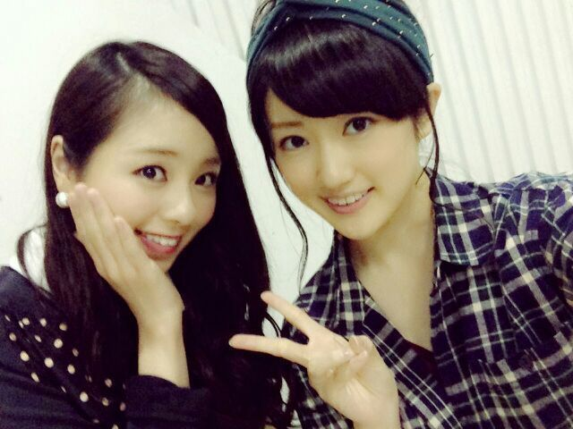
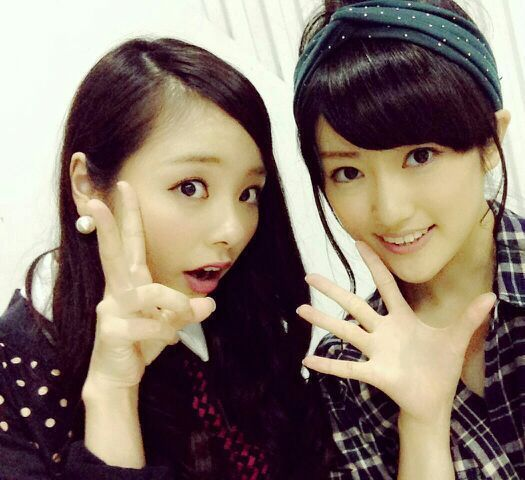

こんにちわ..*
ろってぃーだよ？まにだよ？

まず始めに！！！
皆さんもう知っているかと思うんですけど、なななななんと、ファーストアルバムが発売することになりましたーーーーー(*ノ▽ノ)
はいー もう皆知ってるー 笑
まひろこういうのblog書くの遅いー
わかってるー 謝るー ごめんなさいーm(。_。)mわら
まあまあまあね、 とか言って発表されたのはつい最近、そんな遅くないよね、、せーふせーふ
そしてそして、そのアルバムに入るカップリング曲は、こちら側で何を入れようか一生懸命考えた結果、
乃木坂はいい曲だらけとゆーことで 笑、
あれも入れたい! これも入れたい! と定まらなかった結果、
ファンの方から投票をしてもらおうじゃないかーーー!!!!
となって『カップリング人気投票リクエスト応募』という形になりました。.♪
えとーーー
じゃーーー
ちゃんとー説明するからーねーーー。
・for TUNE music 第１次応募受付、、、
あっ 今日の14時までです 笑へへ
・第２次応募受付 11/13（木）15時〜11/14（金）14時まで。
第２次応募はお一人様の応募回数に制限が無くなる為、応募回数分リクエスト投票が可能となります！！！
※リクエスト投票は、11/6（木）15時〜11/17（月）23時59分までとなっております。
※for TUNE music第３次応募以降は、リクエスト投票対象外となるのでご注意下さいねん(/*´`*)/
皆、わかったかな？
返事はっ？？？ は〜い.♪

あ〜 話変わりますけど、あれですね。
お外、木、紅葉。。
季節感じますねぇ〜..*
今日 一人でバスに乗ってたんですけど
バスから 綺麗な紅葉を見ながら
『あ〜 気づいたらどんどん時間が過ぎているな〜』とか思っていました。笑
そして私は今、「るろうに剣心」が観たいです。
前回見たからには 最後も見ないとね。。。うん
＿＿＿＿＿＿＿＿＿＿＿＿＿＿＿
そーいや、火曜日は安定のせっちゃんとおりました(*´∀｀)ノ やっぱり落ち着くな〜..*
今日も会う予定だったんだけどね.♪予定が合わず、、、、。 しゃあないねぇ
ではでは また更新しますね(*ノ▽ノ)
皆毎日お疲れ様..* 好きやよ？
またね。 まにまに。